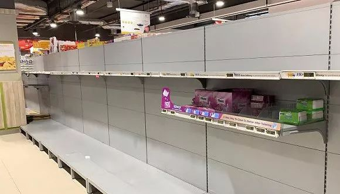

应对COVID-19（新冠病毒）：各国政府严控，市场有所放松
原文链接 备份链接 市场反馈认为，公共卫生事件对经济的影响有限；在应对疫情的关键时刻，政治和金融市场应对疫情展示出截然不同的态度 文 |《财经》特派记者 金焱 发自华盛顿 编辑 | 苏琦 2月11日，世界卫生组织通过社交媒体推特发布其确定 …

图片来源：图虫
记者：潘金花
“
新加坡卫生部长说，“健康的人戴口罩，往往会给我们一种错误的安全感。”
”
新加坡最大的商业银行星展银行（DBS）12日证实，该银行一名职员确诊感染新型冠状病毒。截至当天中午，新加坡确诊的新冠病毒感染病例已达50例，除受“钻石公主号”邮轮疫情影响的日本外，是中国以外病例最多的国家。
据《联合早报》12日报道，星展银行当天下午发布公告说，已有一名职员感染新冠病毒。该职员前一日接受了检测，当天早上确诊。
星展银行表示，已经在当天12时前撤离了其所在的滨海湾金融中心第三大厦的受影响楼层，并已对办公场所进行了消毒，正在展开追踪接触者的工作，银行的其他职员将在家办公。
据了解，滨海湾金融中心共设三座办公大楼，入驻企业以金融机构、律师事务所、商业资讯科技公司、跨国矿产及粮食贸易公司为主，如渣打银行、贝克·麦坚时律所等。其中，星展银行总部所在的3座共46层。
据路透社12日报道，星展银行撤离的受影响楼层为三座43层。该行新加坡主管许志坤（Shee Tse Koon）当天在一份内部备忘录中告知了员工这一消息，表示该楼层的300名员工需要全部撤离。
一位在新加坡工作的金融界人士则在12日告诉界面新闻，目前，滨海湾金融中心3座除43层外的其他楼层仍在正常办公。他表示，该中心距离此前有病例确诊的君悦酒店开车仅11分钟，除星展银行外，在邻近办公的一些金融机构如今也已经出现了疑似病例，正在进行排查。
随着2月7日出现感染源头不明的病例，证实有社区感染迹象，新加坡政府已将疫情警戒层级从黄色升至橙色（最高为红色）。
据新加坡卫生部通报，截至12日中午12时，新加坡已累计确诊50例新冠肺炎病例。其中22例为境外输入，28例为本地感染，8例感染源不明。其中，有8例为重症，27例病情稳定，15例已治愈。

图片来源：新加坡卫生部
在7日前，新加坡的本地感染病例基本都与药行“永泰丰”以及曾召开行业会议的君悦酒店有关。4日，曾接待中国旅行团的“永泰丰”有两名员工确诊，其中一名员工的家政工人以及曾前往该店的一名导游也在当天确诊，5日，上述员工及导游的三名亲属又再确诊。
截至12日中午，与永泰行有关的确诊病例已达9例。而与君悦酒店有关的确诊病例也有3例，分别在6日和8日确诊。此前，马来西亚与韩国已先后确诊了1例与2例与该酒店所召开的会议有关的病例。
但从7日开始，新加坡开始陆续出现更多无中国旅行史、感染源头不明的病例，这些病例工作与生活的地点分布在基督生命堂、维多利亚初级学院、圣淘沙名胜世界等地，其中6人近期曾前往马来西亚，还有2人为孟加拉国人。
目前，新加坡卫生部正在通过电访追踪、查证与核实资料等方式追踪确诊患者的密切接触者，同时也在扩大检测范围，为疑似病例提供更快的诊断测试。截至12日，已有961人被联系隔离，638人经检测呈阴性，125人正在检测中。
从本周开始，新加坡金融区的一些办公室已开始检测员工的体温，并张贴了相应提醒，包括星展银行在内的一些企业也已将线下会议改为了电话会议。
尽管一切看似井然有序，但在外界看来，新加坡在疫情响应方面似乎有些“心大”。不仅在7日晚举行了“万民善信庆元宵”晚会，新加坡航展也在11日照常开幕。
联合晚报6日有关“万民善信庆元宵”晚会的报道
只不过受疫情影响，元宵晚会的赴会人数与往年的万人相比锐减过半。而航展方面，洛克希德·马丁、庞巴迪、德哈维兰等70多家国际参展商也都放弃了参加本次展会。
目前，新加坡卫生部针对疫情出台的防范措施与世界卫生组织给出的建议类似，如不要食用未煮熟肉类、避免前往人多的场所、保持良好的个人卫生习惯等。针对学校等场所，也出台了停办大型活动、人员错峰休息等相应措施。
不过，随着新加坡确诊病例数量的增加，有关口罩使用的建议正在引发争议。该国卫生部仅提出，若有咳嗽或流鼻涕等呼吸道疾病症状，请务必戴口罩，其他情况则未作要求。
对此，新加坡卫生部长颜金勇7日表示，接触、飞沫感染是新冠病毒最主要的传播途径，目前没有证据表明病毒通过空气传播，尽管本地出现社区感染迹象，健康的人仍无需戴口罩，勤洗手才是最佳防御方法。他说，“健康的人戴口罩往往会给我们一种错误的安全感。”
在南洋理工大学留学的小A告诉界面新闻，据她观察，现在在学校里，戴口罩的人还是相对较少，而且主要以中国人为主，少于50人的课堂也还在上课。
她说，有条件的学院会发一些口罩，但校内防控疫情的措施主要是上下午测量体温，以及加强宿舍等地的消毒工作，针对从重点地区返回的师生，也设置了用于隔离的宿舍。
在她看来，新加坡的反应的确有些出乎她的意料。原本以为有“非典”的教训在前，新加坡这次会很严格，但现在好像“动作挺慢”，可能是为了不让民众感到恐慌。
在新加坡的疫情警戒层级中，橙色代表疾病严重，容易在人与人之间传染，但还未在新加坡大范围传播，疫情正得到控制。在橙色警戒下，需要采取中等程度的措施，如隔离、测温、限制医院出入等。在2003年“非典”流行时，新加坡发布的也是橙色警戒，当时该国出现了238例感染，33例死亡。
根据12日22时发布的疫情数字计算，目前新冠肺炎在湖北之外的中国其他地区的致死率约为0.43%，在湖北的致死率约为3.2%。“非典”的平均死亡率则约为9.6%。
新加坡总理李显龙8日在谈及疫情时曾表示，如果疫情的传播难以被控制，致死率能与流感0.01%的致死率保持相似，或许会改变策略。
但其实，新加坡政府并非没有迅速响应疫情。小A说，政府一直在追踪相应人员的活动轨迹。她了解到，新加坡人力部也正在通过短信、电话甚至是突击检查，联系持有工作准证、并正在新加坡工作的外籍员工，要求大家报告自己的定位。
而划定“橙色警戒”的新加坡疾病暴发应对系统（DORSCON），也是该国在“非典”后制定的一项防疫预案。
该系统不仅很详细地针对相关情况下的防范措施、政府跨部门协调、出入境控制、公众交流、应急物资采购等方面的应对措施做了说明，对疫情出现时的隔离、治疗、探访、甚至尸体处置也做出了指导性安排。
在新加坡从事教育行业的小B告诉界面新闻，在测量体温方面，部门与机构还是抓得很紧的，在她工作的场所，体温超过37.5度就会要求回家，所有访客进门前也都必须测量体温。
她表示，住在新加坡的人，每家也可以凭借身份证件，领取四只普通口罩，但只发放一次。不过，对当地政府举措表达质疑的，多数都是在新加坡读书或工作的中国人，她认识的本地人相对来说还是比较冷静，现在超市的货品尽管看起来比之前要少一些，但也并不是一扫而空。

7日新加坡升级“橙色警戒”时，部分超市曾出现“抢购潮”。来源：Twitter
李显龙在8日的讲话中也强调，新加坡已进一步提升了疫情防控的等级和措施，包括减少学校的人流，减少医院中可能出现的交叉感染，对大型公共聚会采取更为谨慎的应对态度等。
他表示，政府正在预先考虑、提前准备。若疫情的致死率上升，政府也将会改变措施，鼓励轻症患者去看家庭全科医生、在家休息，从而将紧张的医院资源留给那些对病毒更缺乏抵抗力的人群。
至于“该不该戴口罩”，其夫人何晶则在前一日做出了解答。她在社交媒体上写道，如今全世界的医用外科口罩及其材料都很短缺，这是因为在疫情暴发前，全球50%以上的医用外科口罩都是中国生产的。
何晶说，现在越南、泰国等地都已禁止或限制了口罩的出口，新加坡虽然还有一些库存，但若此次疫情还将持续一段时间，那么口罩也会不够用。“为防患于未然，我们应该把口罩优先留给将会在这场疫情中处于最前线的医护人员。”
新加坡卫生部长颜金勇也已于12日表示，将向私人诊所发放100万只口罩。
当然，在一些医生看来，有条件的民众还是应该在日常生活中做好防护。周一，来自三家新加坡诊所及一家澳大利亚诊所的四名医生已联名发表了一封公开信，提醒民众在外出时应佩戴口罩。
其中一位医生科琳·托马斯（Colleen Thomas）在接受新加坡网络媒体The Online Citizen采访表示，截至11日中午，47例确诊病例中有7例重症，已值得引起警惕，“在重症率还未突破0.2时，我们更该多加注意。”
那没有口罩该怎么办呢？“要开动脑筋，”信中这样写道，“比如有些人买了可水洗的口罩，将它们缝好，加一点合适的纸，或是在脸上裹一条围巾，都比没有口罩要强。”
（应采访对象要求，小A和小B均为化名）
未经授权 禁止转载

原文链接 备份链接 市场反馈认为，公共卫生事件对经济的影响有限；在应对疫情的关键时刻，政治和金融市场应对疫情展示出截然不同的态度 文 |《财经》特派记者 金焱 发自华盛顿 编辑 | 苏琦 2月11日，世界卫生组织通过社交媒体推特发布其确定 …
原文链接 备份链接 临时报道小组 所有的鱼 所有的鱼 About Feature 地球被毁灭之前究竟发生了什么？ Today 根据丁香医生实时数据，截至 2020 年 2 月 8 日 18 时，全国累计确诊病例 34662 例， …
原文链接 备份链接 童言是生活在新加坡的三明治专栏作者。自1月23日确诊第一例“新型冠状病毒肺炎”病例以来，目前新加坡已确诊18个病例，在海外确诊数据中排名第三，仅次于日本、泰国。 这场“肺炎”疫情牵动着许多在海外中国人的心绪。华人群体 …
原文链接 备份链接 *************▲*************2月2日，武汉大学中南医院影像科主任徐海波教授（白衣者）和同事查看患者的CT检查影像。 （新华社/图） 全文共1150字，阅读大约需要3分钟。 武汉确诊患者单日 …
原文链接 备份链接 【财新网】（记者 曹文姣）2月13日零时起，湖北省十堰市张湾区实施全国首个战时管制令，所有楼栋封闭管理。当天，新冠肺炎疫情重灾区的孝感市下属的大悟县也祭出战时管制令，襄阳市谷城县、黄冈市相继宣布应急管控升级。13日晚 …